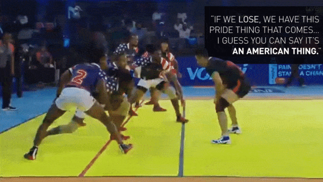

Manchester City are ready to hand manager Pep Guardiola another £150m to turn them into the best team in the world. Arsenal's 21-year-old right-back Hector Bellerin, rated at £40m, is a target, as is Borussia Dortmund's £50m-rated striker Pierre-Emerick Aubameyang, 27.
Cristiano Ronaldo Becomes All-Time Leading Goalscorer in Europe's Top 6 Leagues
Cristiano Ronaldo became the all-time leading goalscorer across Europe's top six leagues on Saturday, netting his 367th goal in Real Madrid's La Liga match against Valencia
When a 'tearful' Virat Kohli broke the captaincy news to Anushka Sharma.
I was in Mohali and there was a Test series going on. I was with Anushka then, she had come to visit me. Surprisingly, when I was made Test captain, then also she was in Melbourne with me. That was a very special moment we shared together, said Kohli.I was in tears because I had never thought that I will see this day. What was more beautiful was that, I was able to share it with Anushka. It was something that I will always remember, he added.
NBA Referee Hotline Bling: David West and Tristan Thompson call LoveLine
As part of the new Collective Bargaining Agreement, NBA players have a hotline to call to complain about the work of NBA refs. And you bet it's still open for the playoffs. It's a place to dispute calls, plead down flagrant fouls, and advocate for yourself – like a small-claims court for very big men. We've provided some replies to these calls, which are about as authentic as the Warriors gear sold at the pedestrian ramp outside Oracle Arena. We know when that hotline blings, that can only mean one thing: two NBA players are going person-to-person.
Team USA Was The Overwhelmed Newcomer At The Kabaddi World Cup

The ancient Indian sport of kabaddi is undergoing a revolution. For centuries it was only played on dusty fields in backcountry villages, but the launch of the Pro Kabaddi League in 2014 has transformed it from an antiquated pastime into a modern sporting spectacle on the Asian subcontinent, played in state-of-the-art stadiums and watched by hundreds of millions. The sport is growing so rapidly that the Kabaddi World Cup, which has been taking place this month in Ahmedabad, India, even features a team representing the United States.
details...